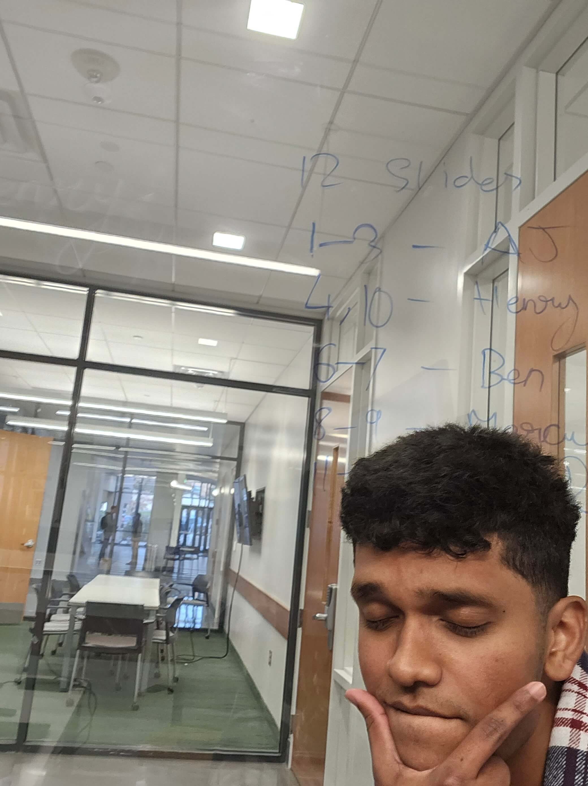
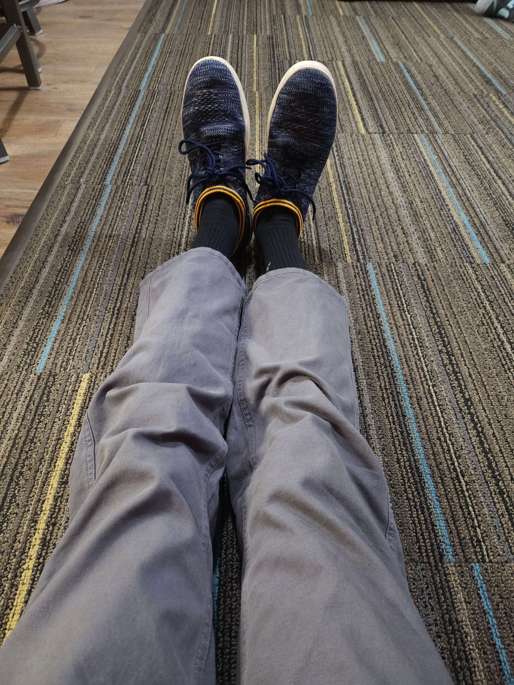

Hello! My name's Akshat Johanan and I’m the author of the stories Arvan has so carefully curated. I also created him but he doesn't like admitting to that. It's always weird when authors talk like that right? Apologies. I love music and writing which is why I decided to create chaotic messes of both. I’ve always loved stories which is why I love writing. When I’m not haunted by my writing ideas, I fence, play D&D, play games, watch movies, anime, and tv shows. I’m currently a college student studying Computer Science which is amazing. I’m already learning so much in my real life to implement into my stories. Being a writer means compiling all your experiences, feelings, and opinions into a database to draw ideas from which is just insanely cool. All writers are magicians in their own ways, creating worlds and filling them with life. Except bad writers. They just end up with Rey Not-Skywalker.